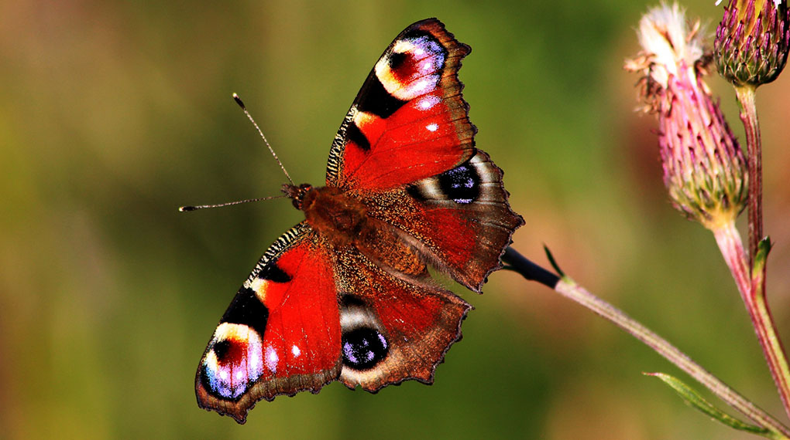

Svenska fjärilar vaknar allt tidigare
Svenska dagfjärilar som övervintrar vaknar nu tidigare på våren jämfört med för 20 år sedan. Det kan leda till att färre fjärilar överlever. Dagfjärilar, som exempelvis citronfjäril, påfågelöga och nässelfjäril, gömmer sig undan när vintern kommer för att sedan vakna på våren igen. Men enligt studier vaknar nu dagfjärilarna i snitt en vecka tidigare jämfört med för 20 år sedan. Anledningen kan vara den ökade temperaturen. Det rapporterar Sveriges radios vetenskapsredaktion.
Enligt Bengt Karlsson, forskare på Zoologiska institutionen vid Stockholms universitet, som ligger bakom studien, kan det här leda till att färre fjärilar överlever. Det är nämligen inte säkert att de växter, som fjärilarnas larver äter, kommer fram lika tidigt.
Författad av Cathrine Beijer. Du kan också gå in på Sveriges Radio för att söka på artikeln.